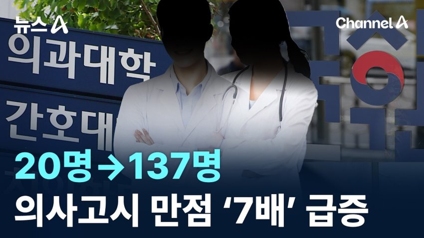
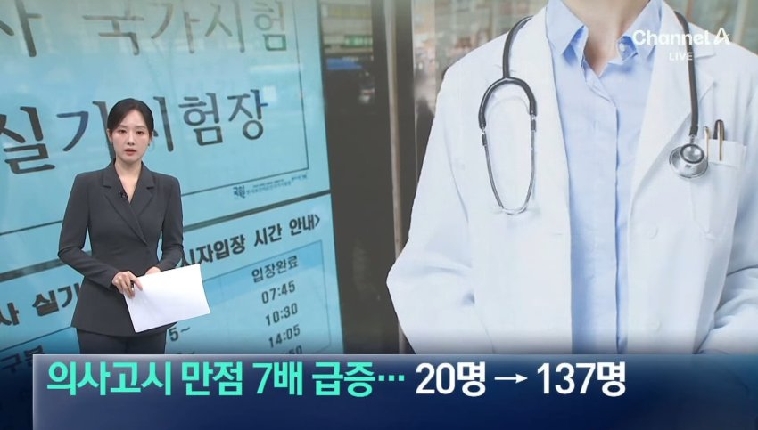
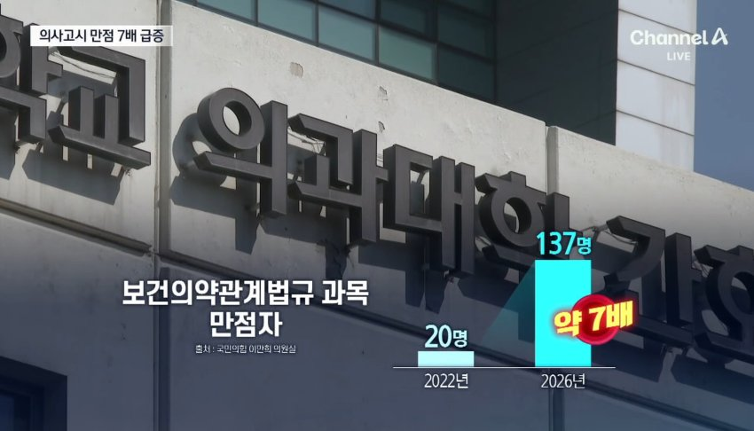
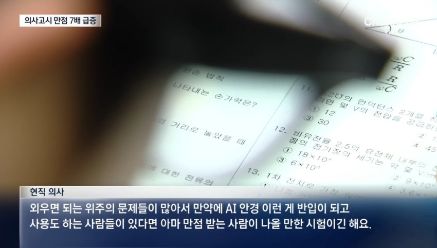
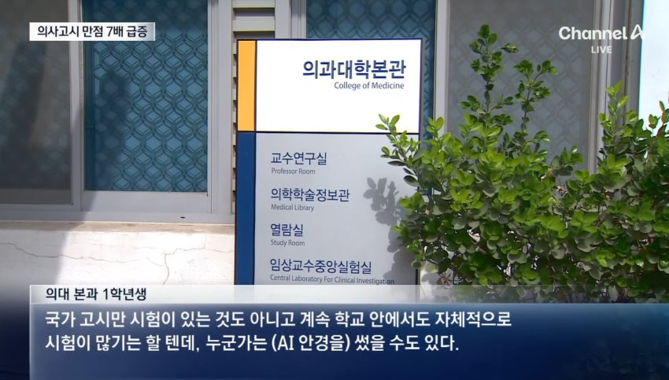
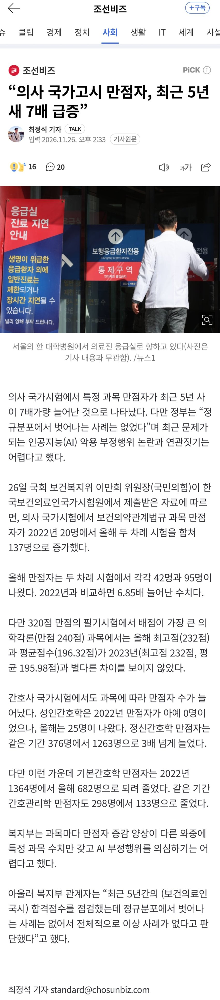
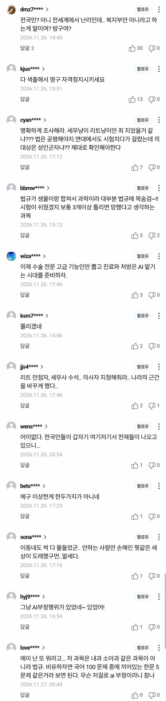

의사 국가고시 특정 과목에서 만점자가 급증하면서
설마 여기서도 AI 부정행위가 있던 것 아니냐,
의혹이 나오고 있습니다.
시험 주관 기관은 어떤 입장인지, 최다희 기자가 취재했습니다.

최근 의사 국가 시험 특정 과목에서 만점자가 급증했습니다.
의사 국가고시에서 보건의약관계법규 과목 만점자만 137명으로
4년 전 같은 과목 20명에서 약 일곱 배로 늘은겁니다.

이 과목은 의료인이 알아야 할
주요 법률과 시행령 등을 다루는 과목인데
AI가 풀기 쉬운 객관식 문제라
부정행위 덕분 아니냐는 의심도 일부에서는 제기되는 상황.
의사 국가고시를 주관하는 한국보건의료인국가시험원은
일부 과목 만점자 수가 증가한 건 맞지만
시험 난이도와 응시자 수 등 다양한 요인에 따른 결과라며
AI 활용 부정행위를 의심하기는 어렵다고 밝혔습니다.

하지만 의대생들은 의대 자체 시험에서도
AI 부정행위 가능성을 의심합니다.
국민 생명을 책임지는 의료인 자격 시험에
관리 체계를 점검해야 한다는 지적이 나옵니다.
채널A 뉴스 최다희입니다.


댓글
수집 당시 댓글 200개
· ㅇㅇ · 11.28 02:08:56
· 1 · 11.28 15:02:58
· ㅇㅇ · 11.28 15:20:45
ㅇㅇ · 11.28 00:14:39
· ㅇㅇ · 11.28 00:16:51
ㅇㅇ · 11.28 00:21:32
딸깍 컷 · 11.28 00:25:09
이오시프스탈린 · 11.28 00:29:09
ㅇㅇ · 11.28 00:29:26
· ㅇㅇ · 11.28 00:29:47
· ㅇㅇ · 11.28 15:53:05
ㅇㅇ · 11.28 00:32:49
증거를친일천주새끼들 · 11.28 00:34:26
ㅇㅇ · 11.28 00:35:43
ansav454 · 11.28 00:37:08
ㅇㅇ · 11.28 00:39:10
· ㅇㅇ · 11.28 00:39:36
· ㅇㅇ · 11.28 00:42:49
ㅇㅇ · 11.28 00:39:20
· ㅇㅇ · 11.28 00:39:43
· ㅇㅇ · 11.28 00:42:56
ㅇㅇ · 11.28 00:39:24
· ㅇㅇ · 11.28 00:39:49
· ㅇㅇ · 11.28 00:43:02
· ㅇㅇ · 11.28 01:15:38
ㅇㅇ · 11.28 00:42:46
ㅇㅇ · 11.28 00:47:09
ㅇㅇ · 11.28 00:49:23
빻윾땡 · 11.28 01:01:34
히이잉 · 11.28 01:11:13
ㅇㅇ · 11.28 01:11:34
ㅇㅇ · 11.28 01:12:04
ㅇㅇ · 11.28 01:15:26
ㅇㅇ · 11.28 01:30:59
실베현자 · 11.28 01:34:08
ㅇㅇ · 11.28 01:47:35
· ㅇㅇ · 11.28 06:59:30
11 · 11.28 02:03:03
ㅇㅇ · 11.28 02:12:22
ㅇㅇ · 11.28 02:14:56
ㅇㅇ · 11.28 02:42:43
은돌퍼플 · 11.28 04:32:27
ㅇㅇ · 11.28 04:39:51
ㅇㅇ · 11.28 04:39:54
ㅇㅇ · 11.28 05:24:26
· ㅇㅇ · 11.28 19:40:00
ㅇㅇ · 11.28 05:28:19
아이템전 레츠고
o o · 11.28 05:38:34
· 찢 · 11.28 05:43:27
ㅇㅇ · 11.28 06:02:51
ㅇㅇ · 11.28 06:26:58
ㅇㅇ · 11.28 06:56:54
이건머 · 11.28 07:05:39
ㅇㅇ · 11.28 07:39:36
· ㅇㅇ · 11.28 12:14:07
ㅇㅇ · 11.28 07:47:38
.. · 11.28 07:55:07
ㅇㅇ · 11.28 08:01:01
ㅇㅇ · 11.28 08:02:25
ㅇㅇ · 11.28 08:14:04
양방냥이 · 11.28 08:27:40
ㅇㅇ · 11.28 08:39:44
ㅇㅇ · 11.28 09:07:10
ㅇㅇ · 11.28 09:14:13
hawaii50 · 11.28 09:58:09
아갤러 · 11.28 10:22:40
ㅇㅇ · 11.28 10:42:11
ㅇㅇ · 11.28 10:45:30
주소킹 · 11.28 11:00:46
· 주소킹 · 11.28 11:00:54
체스와바둑 · 11.28 11:03:10
ㅇㅇ · 11.28 11:06:48
ㅇㅇ · 11.28 11:17:13
ㅇㅇ · 11.28 11:57:55
ㅇㅇ · 11.28 12:39:56
ㅇㅇ · 11.28 12:51:15
ㅇㅇ · 11.28 13:54:46
ㅇㅇ · 11.28 14:07:32
ㅇㅇ · 11.28 14:21:42
ㅇㅇ · 11.28 14:25:37
ㅇㅇ · 11.28 14:26:37
ㅇㅇ · 11.28 14:29:54
ㅇㅇ · 11.28 14:30:15
ㅇㅇ · 11.28 14:33:22
· ㅇㅇ · 11.28 17:10:52
ㅇㅇ · 11.28 15:04:23
ㅇㅇ · 11.28 15:20:53
ㅇㅇ · 11.28 15:23:37
ㅇㅇ · 11.28 15:26:49
ㅇㅇ · 11.28 15:31:10
ㅇㅇ · 11.28 15:58:51
ㅇㅇ · 11.28 16:02:06
필기구 · 11.28 16:30:00
ㅇㅇ · 11.28 16:41:51
ㅇㅇ · 11.28 17:09:33
ㅇㅇ · 11.28 17:54:42
ㅇㅇ · 11.28 18:18:13
ㅇㅇ · 11.28 18:54:39
ㅇㅇ · 11.28 19:53:57
ㅇㅇ · 11.28 19:54:53
· ㅇㅇ · 11.27 23:48:19
ㅇㅇ · 11.27 23:10:56
· ㅇㅇ · 11.27 23:11:02
· ㅇㅇ · 11.27 23:11:08
192.168.* · 11.27 23:12:25
· ㅇㅇ · 11.27 23:14:35
· ㅇㅇ · 11.28 00:19:58
ㅇㅇ · 11.27 23:12:50
· ㅇㅇ · 11.27 23:13:45
· ㅇㅇ · 11.27 23:14:38
· ㅇㅇ · 11.27 23:22:15
· ㅇㅇ · 11.27 23:32:42
· ㅇㅇ · 11.27 23:54:03
· ㅇㅇ · 11.27 23:54:45
· ㅇㅇ · 11.28 00:20:24
ㅇㅇ · 11.27 23:13:22
삭제됨 · 11.27 23:13:44
· ㅇㅇ · 11.28 08:40:55
ㅇㅇ · 11.27 23:14:22
ㅇㅇ · 11.27 23:15:04
ㅇㅇ · 11.27 23:15:10
신인류
ㅇㅇ · 11.27 23:16:00
황족 · 11.27 23:17:04
ㅇㅇ · 11.27 23:17:41
· ㅇㅇ · 11.27 23:25:29
· ㅇㅇ · 11.27 23:57:08
ㅇㅇ · 11.27 23:17:41
· ㅇㅇ · 11.27 23:18:45
ㅇㅇ · 11.27 23:17:41
· ㅇㅇ · 11.27 23:18:03
· ㅇㅇ · 11.27 23:18:12
· ㅇㅇ · 11.27 23:57:33
micro멍거 · 11.27 23:18:09
ㅇㅇ · 11.27 23:19:16
ㅇㅇ · 11.27 23:19:25
· ㅇㅇ · 11.28 02:54:25
ㅇㅇ · 11.27 23:20:31
ㅇㅇ · 11.27 23:20:54
ㅇㅇ · 11.27 23:21:23
ㅇㅇ · 11.27 23:21:57
조~선
· ㅇㅇ · 11.27 23:26:03
제일검
ㅇㅇ · 11.27 23:23:07
ㅇㅇ · 11.27 23:23:10
ㅇㅇ · 11.27 23:23:16
· ㅇㅇ · 11.27 23:24:31
히이잉 · 11.27 23:23:24
ㅇㅇ · 11.27 23:24:28
ㅇㅇ · 11.27 23:24:59
· ㅇㅇ · 11.27 23:25:09
ㅇㅇ · 11.27 23:27:13
ㅇㅇ · 11.27 23:27:34
ㅇㅇ · 11.27 23:29:10
ㅇㅇ · 11.27 23:30:58
· ㅇㅇ · 11.27 23:31:10
ㅇㅇ · 11.27 23:33:01
ㅇㅇ · 11.27 23:36:23
ㅇㅇ · 11.27 23:37:26
· ㅇㅇ · 11.28 03:34:53
ㅇㅇ · 11.27 23:39:06
ㅇㅅㅇ · 11.27 23:42:27
히이잉 · 11.27 23:43:18
풀러리 · 11.27 23:43:52
ㅇㅇ · 11.27 23:44:57
· ㅇㅇ · 11.27 23:48:35
· ㅇㅇ · 11.27 23:52:42
· ㅇㅇ · 11.28 01:54:34
· ㅇㅇ · 11.28 04:54:52
· ㅇㅇ · 11.28 10:43:13
ㅇㅇ · 11.27 23:45:39
ㅇㅇ · 11.27 23:46:49
· ㅇㅇ · 11.27 23:47:41
· ㅇㅇ · 11.27 23:48:40
· ㅇㅇ · 11.27 23:50:07
· ㅇㅇ · 11.27 23:50:30
· ㅅㅂ? · 11.28 01:56:23
ㅇㅇ · 11.27 23:47:23
ㅇㅇ · 11.27 23:47:50
ㅇㅇ · 11.27 23:48:34
ㅇㅇ · 11.27 23:49:04
브레인악셀 100억간다 꽉잡아라
ㅇㅇ · 11.27 23:49:58
ㅇㅇ · 11.27 23:50:59
ㅇㅇ · 11.27 23:51:41
ㅇㅇ · 11.27 23:52:00
ㅇㅇ · 11.27 23:53:52
· ㅇㅇ · 11.28 00:07:22
· ㅇㅇ · 11.28 00:23:57
· ㅇㅇ · 11.28 00:48:23
· ㅇㅇ · 11.28 00:54:13
· ㅇㅇ · 11.28 01:53:49
· ㅇㅇ · 11.28 01:55:19
· 코코아 · 11.28 15:15:13
ㅇㅇ · 11.27 23:54:01
바이럴탐지기 · 11.27 23:59:15
ㅇㅇ · 11.27 23:59:46
ㅇㅇ · 11.28 00:00:53
주몰인데 · 11.28 00:01:38
ㅇㅇ · 11.28 00:04:54
ㅇㅇ · 11.28 00:05:40
ㅇㅇ · 11.28 00:05:56
ㅇㅇ · 11.28 00:12:57